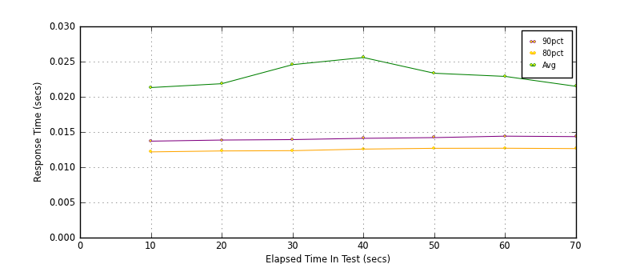
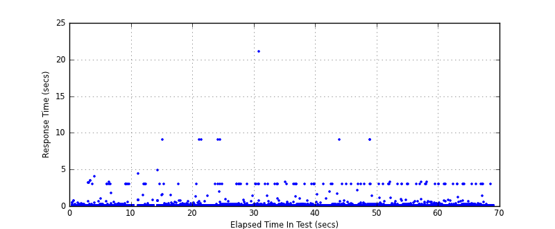
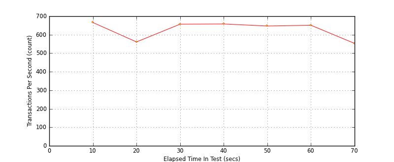

Performance Results Report
Summary
transactions: 43968
errors: 0
run time: 69 secs
rampup: 0 secs
test start: 2012-07-19 09:36:43
test finish: 2012-07-19 09:37:51
time-series interval: 10 secs
workload configuration:
| group name | threads | script name |
|---|
| user_group-1 | 5 | v_user.py |
| user_group-2 | 5 | v_user.py |
| user_group-3 | 5 | v_user.py |
All Transactions
Transaction Response Summary (secs)
| count | min | avg | 80pct | 90pct | 95pct | max | stdev |
|---|
| 43968 | 0.003 | 0.023 | 0.012 | 0.014 | 0.016 | 21.067 | 0.223 |
Interval Details (secs)
| interval | count | rate | min | avg | 80pct | 90pct | 95pct | max | stdev |
|---|
| 1 | 6664 | 666.40 | 0.003 | 0.021 | 0.012 | 0.014 | 0.015 | 4.063 | 0.168 |
| 2 | 5615 | 561.50 | 0.003 | 0.022 | 0.012 | 0.014 | 0.015 | 9.020 | 0.192 |
| 3 | 6571 | 657.10 | 0.003 | 0.025 | 0.012 | 0.014 | 0.016 | 9.036 | 0.263 |
| 4 | 6580 | 658.00 | 0.003 | 0.026 | 0.013 | 0.014 | 0.016 | 21.067 | 0.309 |
| 5 | 6478 | 647.80 | 0.003 | 0.023 | 0.013 | 0.014 | 0.016 | 9.029 | 0.239 |
| 6 | 6511 | 651.10 | 0.004 | 0.023 | 0.013 | 0.014 | 0.016 | 3.231 | 0.172 |
| 7 | 5534 | 553.40 | 0.003 | 0.021 | 0.013 | 0.014 | 0.016 | 3.018 | 0.161 |
Graphs
Response Time: 10 sec time-series

Response Time: raw data (all points)

Throughput: 5 sec time-series
